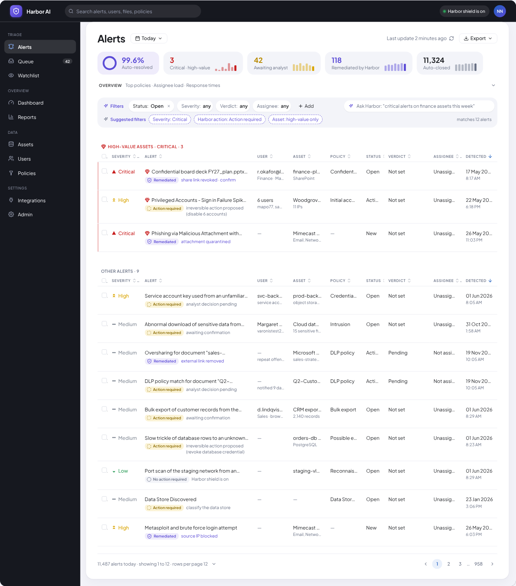
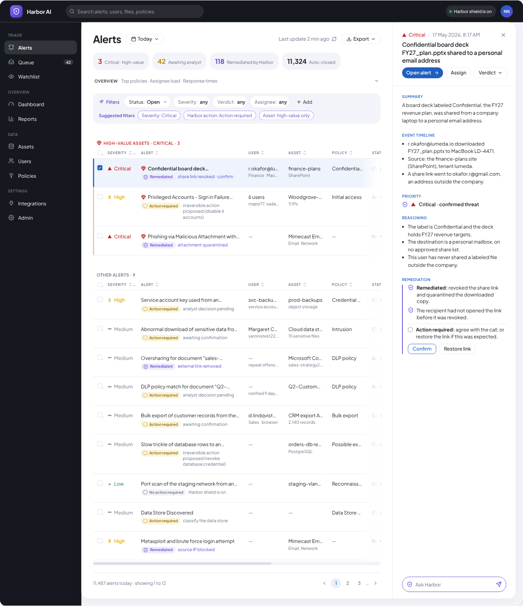
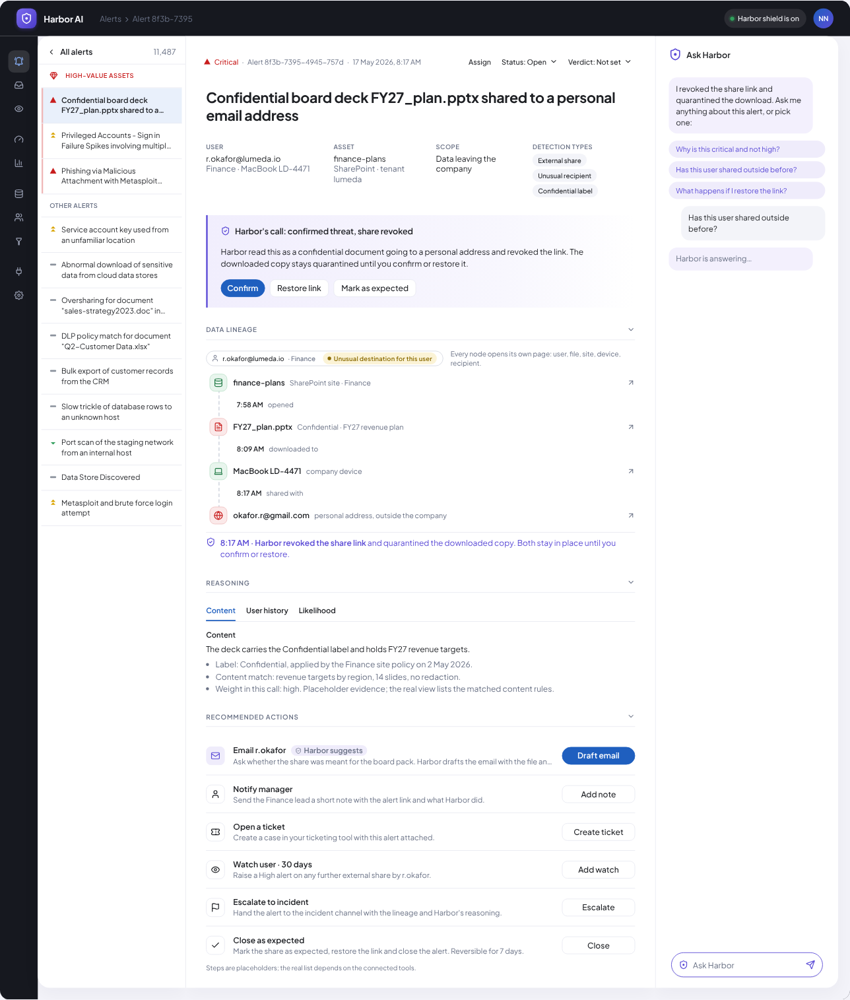

The 3 required screens, plus empty, loading and error
Each wireframe is annotated with the problem it solves and the finding it comes from.

Screen 1Alerts listing page
A list that can be cut to what matters now with Ask Harbor or Filters, with no query language. Four counts sit above it and high-value alerts come first. Each row says what Harbor already did.

Screen 2Alert details and investigation view
Deciding without leaving the list. The Summary, the Data lineage and Harbor's call are enough for most decisions. Open alert is one deliberate step to the full details.

Screen 3Alert action and remediation flow
Acting fast without being blamed for what cannot be undone. Harbor's call is confirmed, restored or marked as expected. Irreversible actions need a named confirmation, and Teach Harbor asks why.
Empty, loading and error states
Empty
No alerts match the filters: applied filters shown as chips with a one-click clear
All clear for today: say so plainly, with what Harbor handled on its own
Loading
Row skeletons at the real row height so nothing jumps
Harbor says it is running the query
Error
Couldn't load alerts: your filters are kept, with Try again and a Service status link
Harbor didn't understand a query: it says so on the Ask Harbor bar
Harbor alerts tableWhat each column can hold
One section per column of the alerts table. Open a section to see its values, what each one means and where it comes from. Source names a researched product, the brief, or says the value is invented. Wherever a value or a line is a guess, it carries the tag Arbitrary decision, more user research required. Nothing here is a Matters.AI value.
Severity
How serious the alert is. Shown as an icon plus the word, so color is never the only signal.
UserArbitrary decision, more user research required
The identity involved, plus one line of context (team and device, or account type).
AssetArbitrary decision, more user research required
The thing the data lives on or moves through. The brief lists cloud, SaaS, endpoints, databases and internal systems, so the types follow that.
Policy
The rule or policy family that fired. Netskope calls it Policy Type, Nightfall Policy and Rule, Varonis a rule category.
StatusArbitrary decision, more user research required
Where the alert is in its life. The research shows two models: a workflow stage (Defender, Varonis, Splunk) and the action taken as the status (Nightfall). Harbor uses the stage model and keeps the action in the Harbor action chip.
Harbor action
The chip under the alert title. This is Harbor’s state, separate from Status.
Verdict
The analyst’s call, kept separate from Status (the Splunk and Falcon pattern). Values borrow Defender’s classification set.
AssigneeArbitrary decision, more user research required
Who owns the alert.
DetectedArbitrary decision, more user research required
A timestamp in the row, date and time on two lines. The research records Detected time, When, and start and end time as the common fields.
Decisions made without enough contextWhere I chose without domain evidence
I did not have the domain knowledge or user research to make these calls on evidence. For each one, I chose by what makes the information flow clearest to someone new to the domain. With more context, I would revisit them.
Detail in a side panel, not a full pageDesign decision: Deciding without leaving the queue, with the deep evidence one step away.User research required for: Knowing how often analysts need the full timeline and graph to decide.
Status and verdict as 2 fieldsDesign decision: A clear record of what was decided, separate from what was done.User research required for: Knowing whether the extra click on close slows teams with high alert volume.
Alerts as the unit, grouped into incidents when relatedDesign decision: Keeping each alert workable on its own.User research required for: Knowing whether Matters.AI customers think in alerts or in incidents.
Narrative AI summary, not a step listDesign decision: A readable story of what happened, with entities linked to the evidence.User research required for: Knowing whether analysts trust a summary or want to approve each step.
Confirmation only on irreversible actionsDesign decision: Asking for a human check only where a click cannot be undone.User research required for: Knowing which actions customers' policies treat as irreversible.
1440 as the base widthDesign decision: Queue, detail and actions visible at once, based on competitors' layouts.User research required for: Knowing what screens analysts actually own.
In the wireframes
Chart choice: a simple flowchart. I do not know how users in this domain read knowledge graphs, so I kept to the simplest form. User research could change this.
Not taken forwardIdeas not taken forward
These ideas are drawn as wireframes only. They are not in the final prototype because they were out of scope for the time and the requirements. The scale ones were designed with large alert volumes in mind.
Teach Harbor: quick cardsFlip through similar alerts and teach Harbor once per card, instead of one alert at a time.
The alertAlert title, one line
Why is this not an issue?
This user is not the issue
This file is not critical
This pattern is normal
This is an exception
Other: write it out
Card 3 of 10 (sample)SkipTeach and next
Designed for scale
Auto-resolve threshold and auto-closed listAlerts below the chosen threshold close on their own, and the closed ones stay in a list a person can open and reopen. A simplified version of this list is in the prototype.
Auto-resolve belowthreshold
Harbor task manager at 2,000+ alertsWith this many alerts a flat list stops working, so Harbor offers the work as a short guided list of tasks.
1
2
3
Counts before lists at 10,000At this size the screen first shows how many alerts sit in each group. The list opens only when a group is chosen.
00
00
00
Numbers left blank on purpose: they are not real data.
These are lo-fi layouts with placeholder lines and labels. The scale sketches on the Ideate page show where each idea came from.